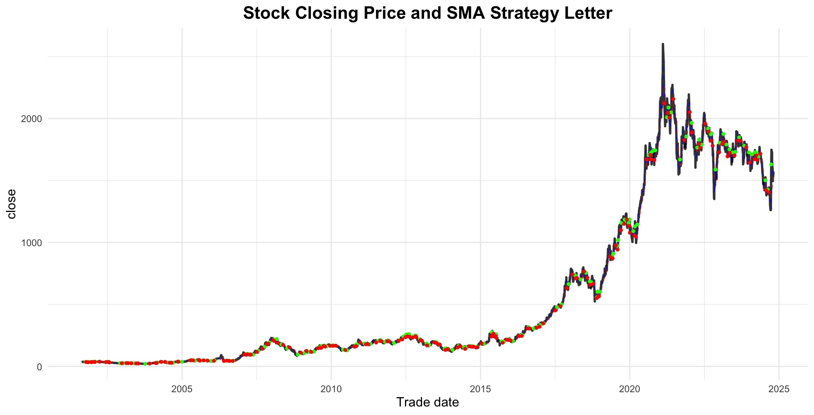
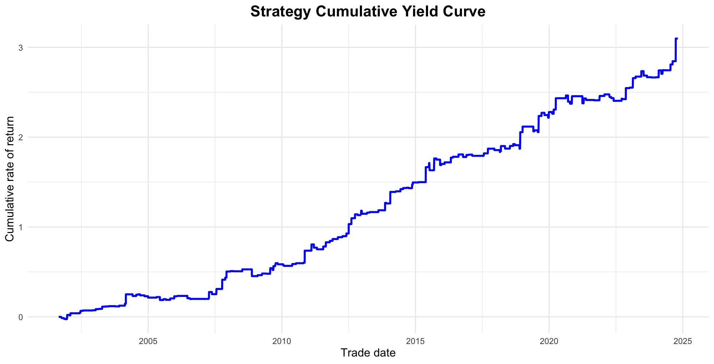

library(tidyverse)
library(tidyr)
library(dplyr)
library(slider)
library(lubridate) # 后期用于转换日期格式
install.packages("Tushare") #下载Tushare包一、前言
均线交叉策略是股票交易中非常常用的一种判断买入或卖出的方法，该策略相对容易理解且容易实现，作为作业案例非常合适。
1. 策略原理
使用两条移动平均线：短期均线（5日）和长期均线（20日）
当短期均线从下方穿越长期均线时（称为“金叉”），通常被视为买入信号。
当短期均线从上方跌破长期均线时（称为：“死叉），通常被视为卖出信号。
2. 实施步骤
利用 Tushare 的库来抓取 600519.SH(茅台) 的价格，并计算短期和长期的移动平均价格
根据上述规则来确定买卖信号。
二、Running Code
- 安装 Tushare（官方教程） 以下代码仅为本次作业定制，了解更多请点击访问官网查询。
- 加载 Tushare 包并链接你的API以调取 Tushare 库中的数据
library('Tushare')
#api <- Tushare::pro_api(token = 'YOUR TOKEN HERE') 源代码长这样，将' '里的内容替换成你的token即可
api <- Tushare::pro_api(token = '7391b03827e9de4d9576c94bb5e3595c160298068b6529da151d2787')- 利用 API 去加载 600519.SH（茅台）的交易日数据
（1）Tushare 里的演示代码长这样
api(api_name = 'daily', ts_code = "000001.SZ", start_date = "20181001", end_date = "20181010")（2）我们需要所有日期的数据，而不是某个日期段的数据，所以直接把后面start_date和end_date删掉
maotai <- api(api_name = 'daily', ts_code = "600519.SH") - 将
Data中的maotai数值型日期更改为日期型数据
maotai <- maotai %>%
mutate(trade_date = ymd(trade_date))- 计算5日均线和20日均线，列表名分别为
ma_5和ma_20。5日均线是什么意思？
maotai <- maotai %>%
arrange(trade_date) %>% mutate(ma_5= slide_dbl(close,mean,.before=4,.complete=TRUE))
maotai <- maotai %>%
arrange(trade_date) %>% mutate(ma_20= slide_dbl(close,mean,.before=19,.complete=TRUE))- 使用lag()窗口函数比较5日均线和20日均线在前一交易日的值，以判断短期趋势和长期趋势的关系。用于生成交易信号，买入或卖出
（1）lag(): 取前一个值，数据整体右移一位，相当于将时间轴滞后一个单位
maotai <- maotai %>%
mutate(
Signal = case_when(
lag(ma_5) < lag(ma_20) & ma_5 > ma_20 ~ 1, # 买入信号（“金叉”）
lag(ma_5) > lag(ma_20) & ma_5 < ma_20 ~ -1, # 卖出信号（“死叉”）
TRUE ~ 0 # 无信号
)
)画图，展示股票的收盘价、短期和长期均线，以及买卖信号的位置（绿色点为买入，红色点为卖出）。
library(ggplot2) #需要用到一个新库来绘制图像 ggplot(maotai, aes(x = trade_date)) + geom_line(aes(y = close), color = "black", size = 1, linetype = "solid", alpha = 0.8) # 股票收盘价 geom_line(aes(y = ma_5), color = "blue", linetype = "dashed", size = 0.2) + # 5日均线 geom_line(aes(y = ma_20), color = "red", linetype = "dashed", size = 0.2) + # 20日均线 geom_point(data = subset(maotai, Signal == 1), aes(y = close), color = "green", size = 1) + # 买入信号 geom_point(data = subset(maotai, Signal == -1), aes(y = close), color = "red", size = 1) + # 卖出信号 labs(title = "Stock Closing Price and SMA Strategy Letter", x = "Trade date", y = "close") + theme_minimal() + theme( plot.title = element_text(hjust = 0.5, size = 16, face = "bold"), axis.title = element_text(size = 12) )Figure 1: Stock Closing Price and SMA Strategy Letter 计算该策略的收益
maotai <- maotai %>% mutate(daily_return = (close / lag(close)) - 1) # 计算收盘价日收益率 maotai <- maotai %>% mutate( strategy_return = ifelse(Signal == 1, daily_return, 0) ) # 当 Signal 为 1 时持仓，计算策略收益 maotai <- maotai %>% mutate(cumulative_return = cumprod(1 + strategy_return) - 1) # 计算策略的累积收益率绘制收益率曲线
ggplot(maotai, aes(x = trade_date, y = cumulative_return)) + geom_line(color = "blue", size = 1) + labs(title = "Strategy Cumulative Yield Curve", x = "Trade date", y = "Cumulative rate of return") + theme_minimal() + theme( plot.title = element_text(hjust = 0.5, size = 16, face = "bold"), axis.title = element_text(size = 12) )
Strategy Cumulative Yield Curve
三、总结
通过以上代码，我发现均线交叉策略是能够保证长期收益为正的，对于长达20年的投资来说，近 3.1% 左右的收益率还是想对较少的，或者可以说少了太多，特别是对于茅台这种股来说，所以该交易策略还是有相对不足的地方，但我也不会优化=。=，水平就到这了，毕竟绘图的代码还是请教了 ChatGPT 和相关 Github 教程 的。总而言之，交易算法还是一个非常复杂的工程，单靠某一个策略进行交易局限性还是太大，但结果终究是好的，能保持一个正收益率就很不错了。